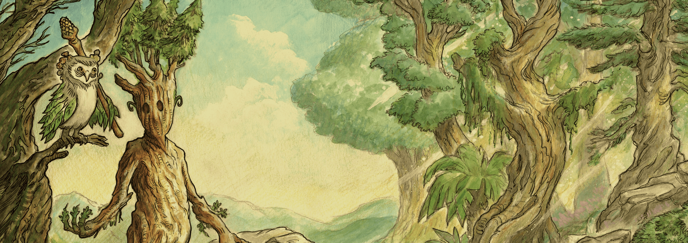
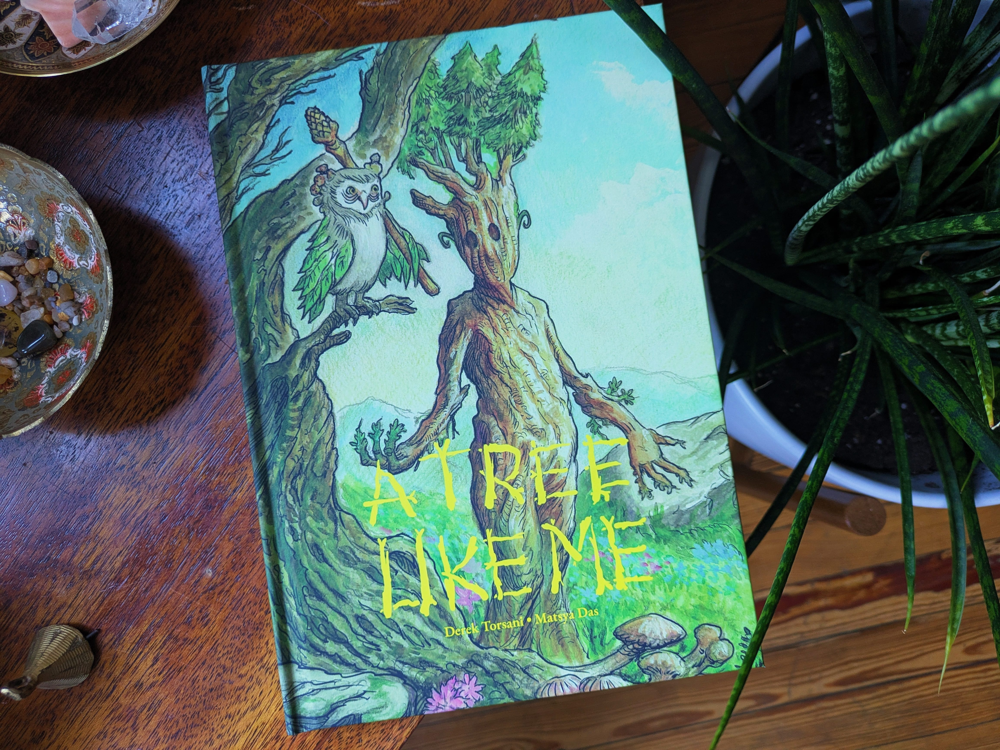
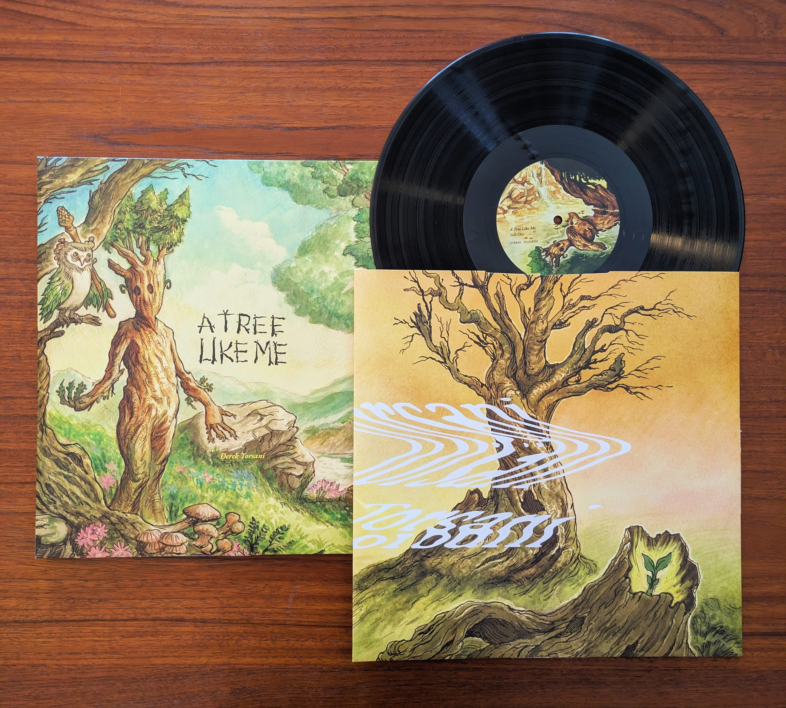

Sprout is a young sapling searching for a sense of belonging in a lively, vibrant forest. Despite the beauty around them, Sprout feels isolated. Guided by their guardian, Sprout meets a community of trees and discovers the importance of celebrating one’s own individuality.

Get the book (US only)Get the book (outside US)A Tree Like Me exists as a musical journey through the forest, following Sprout on their path to self-love and celebration.
The narrated version of the album is exclusively available on Bandcamp.
Purchase the albumThe music can also be listened to on all major streaming services, but if you would like to support this project, please consider purchasing the album on Bandcamp.

Get the vinylAvailable on
Yoto is an audio player for kids. Add A Tree Like Me — the narrated story accompanied by music — to your Yoto library. The digital card is available to add to your Yoto for free (for now).
Add to your YotoWatch and listen to the book being read along with the music.
ABOUT
A Tree Like Me is a world much like our own. A world where we doubt our belonging, where we’re unsure what it means to be ourselves, but where we find strength and acceptance in community.
Creator, Derek Torsani, is a composer, artist, author, and above all a parent. He dreams of raising his own child in a world where we are encouraged and celebrated for loving who we are, exactly as we are. He conceived the world of A Tree Like Me to bring that dream to life, and hopefully nurture healthy relationships and conversations between children, parents, and all friends alike.
After writing the story of Sprout, Derek composed an album to accompany the book. He was joined by the legendary Baltimore vocalist, Ama Chandra, to improvise singing the poems of each moment of Sprouts journey through the forest meeting every different tree. To bring visual life to the story, he collaborated with Brazilian fantasy illustrator, Matsya Das, who also shares a childhood connection to trees and nature.
FREQUENTLY ASKED QUESTIONS
How can I support the project?
You can buy the book, purchase the album, add the digital Yoto card to your library, and share the project with your friends.
What's next for A Tree Like Me?
My dream would be to turn the story and music into a play with live action puppetry and a musical performance by an orchestra.
I'm a book store, can I stock A Tree Like Me?
Yes! Please email derektorsani@gmail.com.
I would like to host a reading and/or performance of A Tree Like Me at my event or establishment.
Great! Please email derektorsani@gmail.com.
Be kind to others, be kind to yourself.